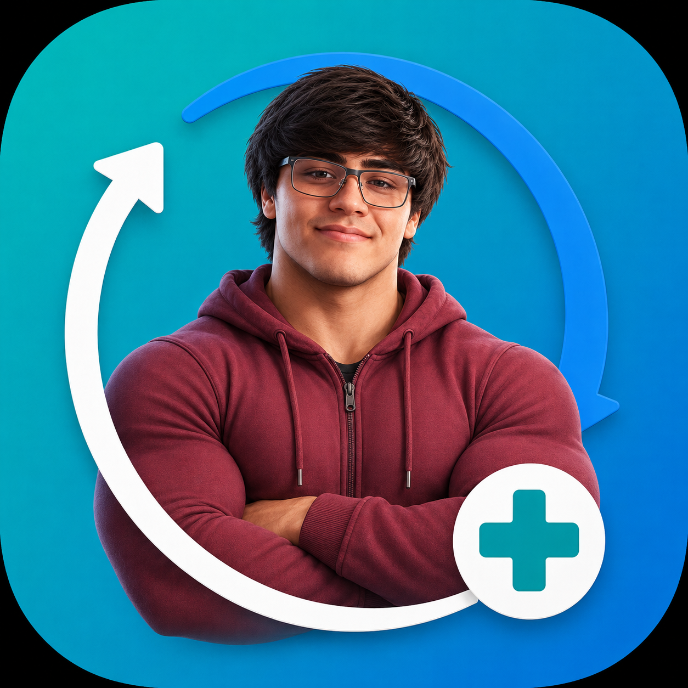

ENFERMICAMBIO
Avisos en tu iPhone
Puente web privado para recibir avisos aunque la IPA no tenga APNs.
Iniciar sesión
Usa la misma cuenta de EnfermiCambio.
Primera vez en iPhone
- Abre este enlace en Safari.
- Pulsa Compartir → Añadir a pantalla de inicio.
- Abre el icono instalado y pulsa “Activar avisos”.
- Acepta el permiso de notificaciones de iOS.
iOS solo permite solicitar Web Push desde la app instalada en la pantalla de inicio y después de tocar un botón. Esa autorización la debe confirmar cada usuario.